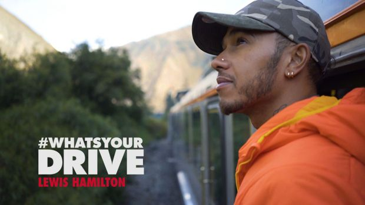
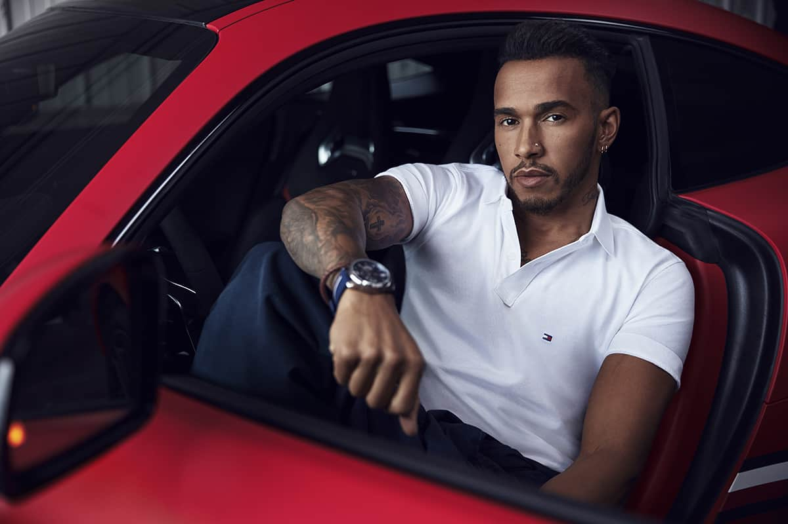

Celebrity brand ambassadorships are a staple of luxury fashion, but they carry a fundamental risk: inauthenticity. More than three-quarters of millennials report being unmoved by celebrity endorsements, and younger audiences are increasingly skeptical of traditional advertising formats.
When Tommy Hilfiger announced Lewis Hamilton as its new global menswear ambassador in 2018, the challenge was going beyond the campaign shoot and doing justice to Hamilton's complexity: a four-time Formula One World Champion with an equally compelling story off the track. The brand needed a format that could turn a high-profile ambassadorship into something compelling, culturally relevant, and shareable.

The answer was a documentary miniseries. #WhatsYourDrive was built to reveal the man behind Lewis Hamilton: his personal ambitions, what fuels his drive to exceed expectations, break down barriers, and inspire those around him. Rather than a single campaign film, new episodes were released in line with the races on the 2018 Formula One World Championship calendar, with each episode focusing on a different aspect of Hamilton's personal and professional life: from his love of music and fashion to what drives him to succeed and how he encourages younger generations to follow their dreams.
The series was distributed across all major social media channels, as well as on a dedicated page on tommy.com, with Hamilton himself sharing each episode directly to his audience. The race-calendar rollout was a deliberate editorial strategy: it kept the series in conversation with the live sporting season, creating a sustained drumbeat of content throughout the year rather than a single launch moment.
As digital producer, I was responsible for the end-to-end video production workflow: managing freelance editors and internal resources to craft each episode from raw footage received from Lewis Hamilton's team, while working closely with our internal marketing department to coordinate the series launch and ensure each release landed with the right timing, framing, and channel strategy.

The series successfully repositioned a traditional fashion ambassadorship as a long-running editorial property. By anchoring content releases to the F1 race calendar, the campaign sustained audience attention across an entire season rather than peaking at launch and fading. Hamilton shared every episode through his official social media accounts on Instagram, Facebook, and YouTube, where he connects with more than 18 million fans, turning his personal channels into a distribution engine for the brand.
The campaign was covered extensively across fashion, marketing, and sports media, amplifying reach well beyond paid media. Industry analysts highlighted the approach as a smart example of how brands can use longer-form, narrative-driven content marketing to break through the authenticity barrier of celebrity endorsements, particularly with millennial and Gen Z audiences.